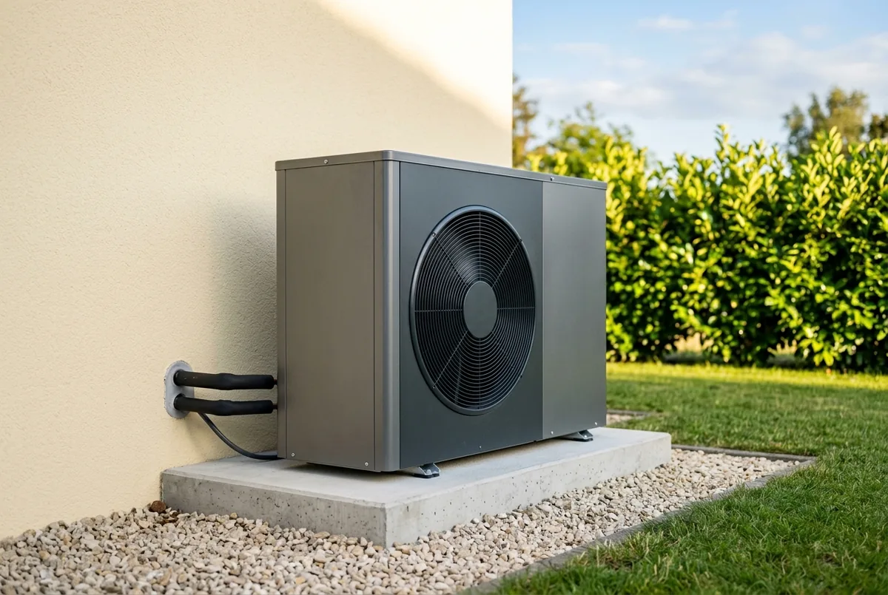
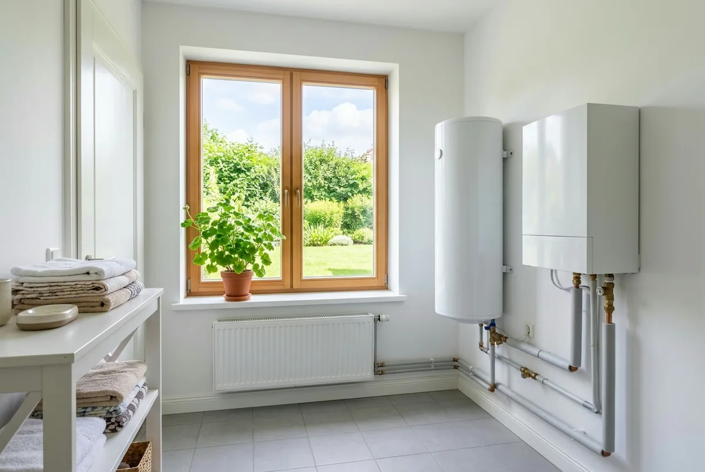

Inhaltsverzeichnis
- Warum Fehler im Altbau teurer sind
- Alle zehn Fehler in der Übersicht
- Fehler 1: Vertrag vor dem Antrag
- Fehler 2: Heizlast nur geschätzt
- Fehler 3: Überdimensionierung
- Fehler 4: Ungünstiger Aufstellort
- Fehler 5: Puffer falsch eingebunden
- Fehler 6: Die Anlage taktet
- Fehler 7: Kein hydraulischer Abgleich
- Fehler 8: Heizkurve zu hoch
- Fehler 9: Warmwasser zu heiß
- Fehler 10: Keine Einweisung
- Fehler nachträglich reparieren
- Fazit und Handlungsempfehlung
- Häufige Fragen
Das Wichtigste in Kürze
- Teuerster Fehler zuerst: Wer den Liefer- und Leistungsvertrag ohne aufschiebende oder auflösende Bedingung unterschreibt, bevor der Förderantrag gestellt ist, verliert den Zuschuss vollständig (Richtlinie BEG EM vom 17. Juli 2026).
- Jede zehnte Anlage zu groß: In der Auswertung von 1.023 Wärmepumpen in zehn europäischen Ländern durch die ETH Zürich (Nature Communications, 2025) war eine von zehn überdimensioniert.
- Heizkurve zu hoch: In einer gesonderten Schweizer Auswertung der ETH Zürich (Smart-Meter-Daten, Erhebung 2023) war bei 41 Prozent von 410 Anlagen die Heizkurve zu hoch eingestellt. Diese Auswertung ist nicht Teil der 2025 in Nature Communications veröffentlichten Analyse von 1.023 Anlagen; dort senkte eine um 1 °C abgesenkte Heizkurve den Energieverbrauch im Mittel um rund 2,61 Prozent.
- Altbau ist kein Ausschlusskriterium: Im Feldtest des Fraunhofer ISE vom 3. November 2025 mit 77 Anlagen im Bestand erreichten Luft-Wasser-Wärmepumpen im Mittel eine Jahresarbeitszahl von 3,4, erdgekoppelte Anlagen 4,3.
- Das meiste ist reparierbar: Heizkurve, Abgleich, Warmwassertemperatur und Speicheranbindung lassen sich nachträglich korrigieren. Gerätegröße und Aufstellort nur mit erheblichem Aufwand, die verlorene Förderung gar nicht.
Warum Einbaufehler im Altbau mehr kosten als im Neubau
Einbaufehler kosten im Altbau mehr, weil hier jedes zusätzliche Grad Vorlauftemperatur unmittelbar auf die Stromrechnung durchschlägt. Ein gedämmter Neubau mit Fußbodenheizung verzeiht eine großzügige Auslegung. Ein Bestandsgebäude mit vorhandenen Heizkörpern verzeiht sie nicht.
Wie häufig solche Fehler tatsächlich auftreten, hat eine Arbeitsgruppe der ETH Zürich untersucht und 2025 in Nature Communications veröffentlicht. Ausgewertet wurden Betriebsdaten von 1.023 Wärmepumpen in zehn europäischen Ländern über zwei Jahre. Ergebnis: Jede zehnte Anlage war überdimensioniert. Nach derselben Auswertung (Nature Communications, 2025) erreichten 17 Prozent der Luft-Wasser-Wärmepumpen und 2 Prozent der Erdwärmepumpen die europäischen Mindesteffizienzstandards nicht.
Davon zu trennen ist eine gesonderte Schweizer Auswertung der ETH Zürich von 410 Wärmepumpen (Smart-Meter-Daten, Erhebung 2023): Dort war bei 41 Prozent die Heizkurve zu hoch eingestellt, bei rund 36 Prozent führte die Nachtabsenkung zu einer Auskühlung mit anschließendem Nachheizen am Morgen, bei rund 26 Prozent war die Heizgrenze zu hoch gesetzt. Diese Auswertung ist nicht Teil der 2025 in Nature Communications veröffentlichten Analyse von 1.023 Anlagen; die Schweiz gehört nicht zu deren zehn Ländern.
Die Werte aus beiden Auswertungen sind europäische Durchschnitte, keine deutschen Altbauwerte. Für den deutschen Bestand liefert der Feldtest des Fraunhofer ISE vom 3. November 2025 mit 77 Anlagen den passenderen Maßstab: Luft-Wasser-Wärmepumpen erreichten im Mittel eine Jahresarbeitszahl, das Verhältnis von abgegebener Wärme zu eingesetztem Strom über ein Jahr, von 3,4 bei einer Spanne von 2,6 bis 4,9, erdgekoppelte Anlagen 4,3. Diese Spanne ist der eigentliche Befund: Zwischen guter und schlechter Ausführung liegt fast der Faktor zwei, im selben Gebäudetyp und mit derselben Technik.
Ob sich der Umstieg für Ihr Gebäude rechnet, klärt der Beitrag Wärmepumpe im Altbau: wann sie sich lohnt und wann nicht. Hier geht es um die Fehler, die auch ein geeignetes Gebäude ausbremsen.
Die zehn Einbaufehler auf einen Blick
Die Tabelle ordnet die zehn Fehler nach Schadenshöhe, nicht nach Häufigkeit. Oben stehen die Fehler, die viel Geld auf einmal kosten oder sich nur baulich zurücknehmen lassen; unten die Einstellungsfehler: häufiger, aber billiger zu beheben.
| Fehler | Woran Sie ihn erkennen | Was er kostet oder anrichtet |
|---|---|---|
| 1. Unbedingter Vertrag vor Antragstellung | Auftrag unterschrieben, ohne aufschiebende oder auflösende Bedingung; keine Bestätigung zum Antrag vorhanden | Förderung vollständig ausgeschlossen; der einzige Fehler dieser Liste, der endgültig ist |
| 2. Heizlast geschätzt statt raumweise berechnet | Angebot nennt eine Kilowattzahl, aber keine Berechnung je Raum | Falsche Gerätegröße, falsche Vorlauftemperatur, falsche Heizkörperentscheidung |
| 3. Wärmepumpe zu groß | Heizleistung deutlich über der berechneten Heizlast; kurze Laufzeiten schon bei milden Temperaturen | Höherer Kaufpreis, häufiges Takten, mehr Verschleiß, dauerhaft niedrigere Jahresarbeitszahl |
| 4. Ungünstiger Aufstellort | Außengerät in einer Nische, dicht an der Grundstücksgrenze oder an einer Schlafzimmerwand | Schallkonflikt mit Nachbarn, Luftkurzschluss und Leistungsverlust; Versetzen ist teuer |
| 5. Pufferspeicher falsch eingebunden | Puffer in Reihe im Heizkreis; Kombispeicher komplett auf Warmwasserniveau | Unnötig hohe Vorlauftemperatur, zusätzliche Speicherverluste |
| 6. Anlage taktet | Verdichter startet in der Übergangszeit im Minutentakt; hohe Startzahl im Reglermenü | Verschleiß am Verdichter, kürzere Lebensdauer, schlechtere Effizienz |
| 7. Hydraulischer Abgleich fehlt | Einzelne Räume kühl, andere zu warm; Ventile ohne Voreinstellung, kein Abgleichprotokoll | Höhere Vorlauftemperatur fürs ganze Haus, damit der ungünstigste Raum warm wird |
| 8. Heizkurve zu hoch eingestellt | Thermostatventile zugedreht, Räume trotzdem überheizt; hoher Vorlauf bei milder Witterung | Dauerhafter Mehrverbrauch; laut ETH-Auswertung (Nature Communications, 2025) senkt 1 °C weniger den Verbrauch im Mittel um rund 2,61 Prozent, im Einzelfall je nach Ausgangszustand mehr oder weniger |
| 9. Warmwassertemperatur zu hoch | Speichertemperatur am oberen Anschlag, häufiger Heizstabbetrieb | Größter Temperaturhub wird unnötig oft gefahren; Mehrverbrauch das ganze Jahr |
| 10. Keine Einweisung des Betreibers | Kein Übergabeprotokoll, keine Parameterliste, Reglermenü unbekannt | Alle übrigen Fehler bleiben unentdeckt und damit dauerhaft |

Fehler 1: Der Vertrag ist unterschrieben, bevor der Förderantrag gestellt ist
Dieser Fehler steht an erster Stelle, weil er die gesamte Förderung auf einen Schlag vernichtet: Wer einen Liefer- oder Leistungsvertrag ohne aufschiebende oder auflösende Bedingung abschließt, bevor der Antrag gestellt ist, hat nach dem KfW-Merkblatt 458 (gültig ab 21. Juli 2026) mit dem Vorhaben begonnen, und ein Vorhabenbeginn vor Antragstellung schließt die Förderung aus.
Woran Sie ihn erkennen: Sie haben ein Angebot per Unterschrift oder per E-Mail angenommen, und im Vertragstext koppelt keine Klausel den Vertrag an die Förderzusage. Zweites Warnzeichen: Es liegt keine Bestätigung zum Antrag (BzA) vor, und der Betrieb drängt trotzdem auf einen Montagetermin.
Was Sie dagegen tun: Unterschreiben Sie ausschließlich einen Vertrag mit aufschiebender oder auflösender Bedingung, und stellen Sie den Antrag, bevor gebaut wird. Wie Sie diese Bedingung mit dem ausführenden Betrieb vereinbaren und was sonst noch in den Vertrag gehört, beschreibt der Beitrag Installateur für die Wärmepumpe finden und beauftragen.
Genau hier setzt unsere Angebotsprüfung vor der Unterschrift an: Wir prüfen das Handwerkerangebot auf Förderfähigkeit und Vertragsgestaltung, solange eine Korrektur noch nichts kostet.
Fehler 2: Die Heizlast wird geschätzt statt raumweise berechnet
Ohne raumweise Heizlastberechnung ist jede weitere Entscheidung eine Schätzung, die Gerätegröße, die Vorlauftemperatur und die Frage, welche Heizkörper bleiben dürfen. Die Heizlast ist die Wärmeleistung, die ein Gebäude am kältesten Auslegungstag braucht; berechnet wird sie nach DIN EN 12831, und zwar für jeden Raum einzeln aus Bauteilaufbau, Flächen, Luftwechsel und Auslegungstemperatur.
Woran Sie ihn erkennen: Das Angebot nennt eine Kilowattzahl, aber keine Berechnung. Die Auslegung stützt sich auf die Wohnfläche, eine Faustformel pro Quadratmeter oder den alten Gasverbrauch ohne Korrektur für Warmwasser und Kesselverluste. Eine Aufstellung mit Heizlast je Raum fehlt.
Was Sie dagegen tun: Lassen Sie die Heizlast berechnen, bevor ein Gerät ausgesucht wird. Sie zeigt für jeden Raum, bei welcher Vorlauftemperatur der vorhandene Heizkörper noch ausreicht, und entscheidet damit auch darüber, ob Heizkörper getauscht oder behalten werden und ob der Betrieb ohne Fußbodenheizung funktioniert. Für die Förderung ist ohnehin eine Auslegung auf eine Jahresarbeitszahl von mindestens 3,0 nachzuweisen, nach VDI 4650 Blatt 1 in der Fassung 2019-03, und das setzt eine belastbare Heizlast voraus. Die raumweise Heizlastberechnung erstellen wir als eigene Leistung, unabhängig vom ausführenden Betrieb.
Fehler 3: Die Wärmepumpe ist zu groß
Eine zu groß gewählte Wärmepumpe kostet doppelt: einmal beim Kauf und danach jedes Jahr im Betrieb. In der Auswertung von 1.023 Wärmepumpen in zehn europäischen Ländern durch die ETH Zürich, veröffentlicht 2025 in Nature Communications, war jede zehnte Anlage überdimensioniert. Der Feldtest des Fraunhofer ISE vom 3. November 2025 kommt für den deutschen Bestand zum selben qualitativen Befund: Viele der untersuchten Wärmepumpen waren, auf den tatsächlichen Verbrauch bezogen, überdimensioniert. Eine Prozentangabe nennt der Bericht dazu allerdings nicht.
Woran Sie ihn erkennen: Die installierte Heizleistung liegt deutlich über der berechneten Heizlast, und die Anlage läuft in der Übergangszeit nur kurz. Ein typisches Verkaufsargument im Vorfeld: lieber eine Nummer größer, damit es im Winter sicher reicht.
Was Sie dagegen tun: Die Wärmepumpe wird auf die berechnete Heizlast ausgelegt, nicht auf einen Sicherheitszuschlag. Der elektrische Heizstab ist für die wenigen sehr kalten Tage gedacht; das Fachmedium haustec.de nennt unter Bezug auf BWP-Klimakarte und DWD-Daten eine Auslegung, bei der die Wärmepumpe rund 97 Prozent der Jahresheizarbeit übernimmt. Achten Sie außerdem auf den Modulationsbereich, also darauf, wie weit ein Gerät seine Leistung herunterfahren kann, mehr dazu im Beitrag Luft-Wasser-Wärmepumpe: Kriterien beim Modellvergleich.
Fehler 4: Der Aufstellort ist ungünstig gewählt
Ein schlecht gewählter Aufstellort verursacht zwei Probleme gleichzeitig: Schallkonflikte mit den Nachbarn und einen Leistungsverlust durch Luftkurzschluss. Ein Luftkurzschluss entsteht, wenn das Außengerät die von ihm bereits abgekühlte Abluft direkt wieder ansaugt. Die Wärmequelle wird dadurch künstlich kälter, und die Effizienz sinkt.
Die Kurzstudie des Bauherren-Schutzbunds und des Instituts für Bauforschung nennt zum Aufstellort drei Punkte: einen Regel-Mindestabstand von häufig drei Metern zur Grundstücksgrenze, Körperschallübertragung ins Gebäude bei Wandmontage ohne Entkopplung und den Einbau in unsanierten Gebäuden mit sehr hohem Wärmebedarf. Die Studie beruht auf dokumentierten Einzelfällen und nennt keine Häufigkeit.
Woran Sie ihn erkennen: Das Außengerät steht in einer Nische, einer Innenecke oder zwischen zwei Wänden, hängt an einer Konsole an der Wand eines Schlafzimmers, liegt unter drei Metern von der Grundstücksgrenze entfernt oder bläst direkt auf ein Nachbarfenster.
Was Sie dagegen tun: Klären Sie den Standort vor der Montage. Nachträgliches Versetzen gehört zu den teuersten Korrekturen. Das Gerät braucht freie An- und Abströmung, Abstand zu Fenstern und Grenzen sowie eine körperschallentkoppelte Aufstellung. Ein Förderhinweis, der die Gerätewahl mitbestimmt: Nach der Richtlinie BEG EM vom 17. Juli 2026 werden Luft-Wasser-Wärmepumpen nur gefördert, wenn die Geräuschemissionen des Außengeräts mindestens 10 dB unter den Grenzwerten der Ökodesign-Verordnung Nr. 813/2013 liegen. Welche Abstände und Immissionsrichtwerte gelten, richtet sich nach Landesbaurecht und Einzelfall; das ersetzt keine Rechtsberatung.
Fehler 5: Der Pufferspeicher ist falsch eingebunden
Ein falsch eingebundener Pufferspeicher zwingt die Wärmepumpe dauerhaft auf eine höhere Vorlauftemperatur, als das Gebäude eigentlich braucht, und kostet damit jedes Jahr Effizienz. Ein Pufferspeicher ist ein Wasserbehälter, der Wärme zwischenspeichert, damit die Anlage längere Laufzeiten fahren kann und Abtauvorgänge abgedeckt sind.
Der Feldtest des Fraunhofer ISE vom 3. November 2025 nennt genau hier eine typische Schwachstelle: Bei Kombispeichern fehlte teils eine zuverlässige Trennung der Temperaturniveaus für Heizung und Warmwasser. Die Folge ist, dass der gesamte Speicherinhalt auf Warmwasserniveau gehalten wird, obwohl der Heizkreis mit deutlich weniger auskäme.
Woran Sie ihn erkennen: Der Puffer sitzt in Reihe im Heizkreis, sodass das gesamte Heizwasser durch ihn hindurchläuft. Die Vorlauftemperatur der Wärmepumpe liegt spürbar über der Temperatur, die an den Heizkörpern ankommt.
Was Sie dagegen tun: Prüfen lassen, ob der Puffer nötig ist und ob er parallel statt in Reihe eingebunden werden kann. Wo ein Kombispeicher steht, muss die Trennung der Temperaturniveaus funktionieren. Das ist eine Aufgabe für einen Betrieb mit Wärmepumpen-Erfahrung; worauf Sie bei der Auswahl achten, steht im Beitrag Installateur für die Wärmepumpe finden und beauftragen.
Angebot liegt vor? Prüfen lassen, bevor Sie unterschreiben.
Wir berechnen die raumweise Heizlast und prüfen Ihr Angebot herstellerneutral auf Förderfähigkeit, solange eine Korrektur noch nichts kostet.
Kostenlose Erstberatung sichernFehler 6: Die Anlage taktet
Takten verschleißt den Verdichter und senkt die Effizienz, ohne dass es dem Bewohner sofort auffällt. Takten ist das häufige Ein- und Ausschalten des Verdichters, weil die Wärmepumpe mehr Leistung abgibt, als das Gebäude im Moment abnimmt, und ihre Leistung nicht weit genug herunterfahren kann.
Wie groß die Unterschiede zwischen realen Anlagen sind, zeigt der Abschlussbericht des Fraunhofer ISE zum Vorhaben im Gebäudebestand (Fassung mit Stand 25. November 2025): Die gemessene Schalthäufigkeit reicht von 550 bis 15.800 Verdichterstarts pro Jahr. Wie viele Anlagen davon problematisch takten, quantifiziert der Bericht nicht. Die Spannbreite selbst zeigt aber, wie stark die Ausführung das Ergebnis bestimmt.
Woran Sie ihn erkennen: In der Übergangszeit springt das Außengerät im Minutentakt an und wieder aus. Viele Regler zeigen im Servicemenü Verdichterstarts und Betriebsstunden an; aus beiden Werten ergibt sich die mittlere Laufzeit je Start.
Was Sie dagegen tun: Takten ist ein Symptom, kein eigenständiger Defekt. Übliche Ursachen sind eine zu große Anlage, ein zu geringer Volumenstrom durch weit geschlossene Thermostatventile, ein zu kleines Wasservolumen im Heizkreis und eine ungünstige Schalthysterese. Prüfen Sie in dieser Reihenfolge: Ventile öffnen, Volumenstrom und Abgleich kontrollieren, Reglerparameter anpassen, erst danach bauliche Änderungen.
Fehler 7: Der hydraulische Abgleich fehlt
Ohne hydraulischen Abgleich muss die Vorlauftemperatur für das ganze Haus so hoch gefahren werden, dass auch der ungünstigste Raum noch warm wird, und genau das ist bei einer Wärmepumpe teuer. Der hydraulische Abgleich ist die rechnerische Einstellung der Heizungsanlage, bei der jeder Heizkörper über die Voreinstellung seines Ventils genau den Wasserstrom bekommt, den er für seine Raumheizlast braucht.
Eine belastbare, wärmepumpenspezifische Statistik dazu, wie viele Neuinstallationen ohne Abgleich in Betrieb gehen, existiert für Deutschland nicht. Die zu diesem Thema kursierenden Zahlen beziehen sich auf Heizungsanlagen allgemein und überwiegend auf den Gas- und Ölbestand; auf Wärmepumpen lassen sie sich nicht übertragen.
Woran Sie ihn erkennen: Einzelne Räume bleiben kühl, während andere überheizen. Die Thermostatventile stehen im Haus unterschiedlich weit zu, damit es einigermaßen passt. In den Unterlagen fehlt ein Abgleichprotokoll mit Voreinstellwerten je Heizkörper.
Was Sie dagegen tun: Lassen Sie den Abgleich auf Grundlage der raumweisen Heizlast durchführen, nicht per Schätzverfahren. Nur dann liefert er die Werte, die eine niedrige Vorlauftemperatur möglich machen. Wie viel er im Einzelfall bringt, hängt vom Ausgangszustand ab und lässt sich pauschal nicht beziffern. Ob für die Förderung ein Nachweis verlangt wird, richtet sich nach den technischen Mindestanforderungen der jeweils geltenden Richtlinienfassung, das klären Sie mit Ihrem Fachbetrieb.

Fehler 8: Die Heizkurve ist zu hoch eingestellt
Eine zu hoch eingestellte Heizkurve ist der häufigste dokumentierte Einstellungsfehler und zugleich der billigste zu behebende: In einer gesonderten Schweizer Auswertung der ETH Zürich von 410 Wärmepumpen (Smart-Meter-Daten, Erhebung 2023) war bei 41 Prozent die Heizkurve zu hoch eingestellt, sodass die Wärmepumpe einen unnötig großen Temperaturhub erzeugen musste. Diese Auswertung ist nicht Teil der 2025 in Nature Communications veröffentlichten Analyse von 1.023 Anlagen. Die Heizkurve legt fest, welche Vorlauftemperatur die Heizung bei welcher Außentemperatur erzeugt.
Wie stark eine Korrektur wirkt, hat die Nature-Auswertung von 1.023 Anlagen beziffert: Eine Absenkung der Heizkurve um 1 °C erhöht den SCOP im Mittel um 0,11 und senkt den Energieverbrauch um rund 2,61 Prozent. Zwei verwandte Fehler traten in der Schweizer Auswertung ebenfalls häufig auf: Bei rund 36 Prozent führte die Nachtabsenkung zu einer Auskühlung mit Nachheizen am Morgen, bei rund 26 Prozent lief die Anlage wegen einer zu hoch gesetzten Heizgrenze länger als nötig.
Woran Sie ihn erkennen: Die Thermostatventile sind zugedreht, und trotzdem sind einzelne Räume zu warm. Schon bei milden Außentemperaturen um 10 °C läuft die Anlage mit hoher Vorlauftemperatur.
Was Sie dagegen tun: Öffnen Sie zuerst alle Thermostatventile vollständig, damit die Regelung greifen kann. Senken Sie dann die Heizkurve in kleinen Schritten und beobachten Sie jeweils mehrere Tage. Prüfen Sie zusätzlich Heizgrenze und Nachtabsenkung: Bei Wärmepumpen kostet eine tiefe Absenkung mit anschließendem Wiederaufheizen oft mehr, als sie einspart.
Fehler 9: Die Warmwassertemperatur ist zu hoch eingestellt
Die Warmwasserbereitung verlangt der Wärmepumpe den größten Temperaturhub des Jahres ab. Jedes unnötige Grad Speichertemperatur kostet deshalb überdurchschnittlich viel Strom. Anders als beim Heizkreis hilft hier keine milde Witterung: Der Bedarf besteht im Juli wie im Januar.
Woran Sie ihn erkennen: Die Speichertemperatur steht am oberen Anschlag, obwohl niemand so heißes Wasser zapft. Der Heizstab springt regelmäßig für die Warmwasserbereitung an, erkennbar an einem Stromverbrauch, der im Sommer kaum sinkt.
Was Sie dagegen tun: Legen Sie die Speichertemperatur gemeinsam mit dem Fachbetrieb auf den niedrigsten hygienisch zulässigen Wert fest und legen Sie die Aufheizung in Zeiten, in denen ohnehin geheizt wird oder eigener Solarstrom anfällt. Welche Temperatur und welches Intervall zulässig sind, hängt von Anlagengröße und Einstufung der Trinkwasseranlage ab und lässt sich pauschal nicht beantworten. Prüfen Sie außerdem, ob der Heizstab für den Regelbetrieb freigegeben sein muss oder nur als Notreserve dient.
Fehler 10: Der Betreiber wird nicht eingewiesen
Die fehlende Einweisung ist der billigste Fehler dieser Liste, und der, der alle anderen dauerhaft macht. Wer nicht weiß, wo Heizkurve, Heizgrenze und Betriebsstunden im Reglermenü stehen, bemerkt eine falsche Einstellung erst an der Jahresabrechnung.
Die Verbraucherzentrale Rheinland-Pfalz weist in einer Pressemeldung vom 19. Juni 2024 darauf hin, dass Wärmepumpen in Bestandsgebäuden technisch und wirtschaftlich effizient laufen können, wenn bestimmte Voraussetzungen erfüllt sind, und nennt die Qualifikation des ausführenden Handwerksbetriebs als kritischen Faktor. Eine Häufigkeitsangabe zu Installationsfehlern enthält die Meldung nicht.
Woran Sie ihn erkennen: Es gibt kein Übergabeprotokoll und keine Liste der eingestellten Parameter. Sie kennen den Weg ins Servicemenü nicht, und für Rückfragen ist kein fester Ansprechpartner benannt.
Was Sie dagegen tun: Vereinbaren Sie die Einweisung schriftlich als Teil des Auftrags, zusammen mit einem Übergabeprotokoll, das die eingestellten Werte dokumentiert. Lassen Sie sich zeigen, wie Sie Heizkurve, Heizgrenze und Warmwassertemperatur ablesen. Sinnvoll ist außerdem eine getrennte Messung: ein eigener Stromzähler für die Wärmepumpe und ein Wärmemengenzähler. Erst damit lässt sich die Jahresarbeitszahl ermitteln, und nur was gemessen wird, lässt sich verbessern.
Wie Sie einen bereits gemachten Fehler noch reparieren
Die meisten Einbaufehler lassen sich nachträglich korrigieren, ohne die Wärmepumpe auszutauschen. Entscheidend ist die Reihenfolge, damit Sie nicht das Teuerste zuerst anfassen. Arbeiten Sie von der billigsten zur aufwendigsten Stufe und messen Sie nach jedem Schritt.
- Zahlen sammeln. Stromverbrauch der Wärmepumpe, abgegebene Wärmemenge, Betriebsstunden und Verdichterstarts über mindestens eine Heizperiode. Ohne diese Werte ist jede Optimierung Raten.
- Einstellungen korrigieren. Heizkurve, Heizgrenze, Nachtabsenkung, Warmwassertemperatur, Schalthysterese. Reine Reglerarbeit, meist an einem Termin erledigt; allein 1 °C weniger Heizkurve senkte den Verbrauch in der ETH-Auswertung (Nature Communications, 2025) im Mittel um rund 2,61 Prozent, wie viel es im Einzelfall wird, hängt vom Ausgangszustand ab.
- Hydraulik in Ordnung bringen. Abgleich auf Basis der raumweisen Heizlast, Überströmventil prüfen, Puffereinbindung und Trennung der Temperaturniveaus kontrollieren.
- Bauliche Einzelmaßnahmen. Unterdimensionierte Heizkörper tauschen, Rohrdämmung ergänzen, Schallentkopplung des Außengeräts nachrüsten.
- Größere Eingriffe. Versetzen des Außengeräts oder Gerätetausch, die letzte Stufe und der Grund, warum Auslegung und Standort vor die Montage gehören.
Für die Optimierung einer bestehenden Anlage gibt es einen eigenen Förderweg: Die Richtlinie BEG EM vom 17. Juli 2026 fördert die Heizungsoptimierung zur Effizienzverbesserung mit 15 Prozent; zuständig ist das BAFA. Ein Rechtsanspruch auf Förderung besteht nicht.
Ein Punkt bleibt endgültig: Eine verlorene Förderung lässt sich nicht nachträglich beantragen. Wurde der Vertrag ohne aufschiebende oder auflösende Bedingung vor der Antragstellung geschlossen, ist der Zuschuss für diese Maßnahme ausgeschlossen.
Fazit: Die teuersten Fehler entstehen vor der Unterschrift
Die teuersten Fehler beim Einbau einer Wärmepumpe im Altbau passieren nicht auf der Baustelle, sondern am Schreibtisch: bei der Auslegung und bei der Vertragsgestaltung. Alles, was danach kommt (Heizkurve, Abgleich, Warmwasser, Takten), lässt sich reparieren. Eine zu große Anlage, ein schlechter Standort und eine verlorene Förderung nicht oder nur teuer.
Die belegten Zahlen sprechen dafür, den Aufwand vorne zu investieren: In der ETH-Auswertung von 1.023 Wärmepumpen (Nature Communications, 2025) war jede zehnte Anlage zu groß, und 17 Prozent der Luft-Wasser-Geräte blieben unter den europäischen Mindesteffizienzstandards. In einer gesonderten Schweizer Auswertung der ETH Zürich von 410 Wärmepumpen (Smart-Meter-Daten, Erhebung 2023) war bei 41 Prozent die Heizkurve zu hoch eingestellt; diese Auswertung ist nicht Teil der Nature-Analyse. Gleichzeitig zeigt der Fraunhofer-ISE-Feldtest vom 3. November 2025 Jahresarbeitszahlen von im Mittel 3,4 und 4,3. Der Altbau ist also nicht das Problem, die Ausführung ist es.
Unsere Empfehlung ist deshalb schlicht: Lassen Sie vor der Gerätewahl die raumweise Heizlast berechnen und das Angebot vor der Unterschrift prüfen. Das sind genau die beiden Punkte, an denen die teuersten Fehler entstehen, beides machen wir herstellerneutral. Welche Vorarbeiten sich darüber hinaus lohnen, steht im Beitrag Wärmepumpe im Altbau: welche Vorbereitung sich lohnt.
Stand der Angaben (26. Juli 2026)
Stand der Angaben: 26. Juli 2026. Die Förderangaben beruhen auf der Richtlinie BEG EM vom 17. Juli 2026, in Kraft seit dem 21. Juli 2026, einschließlich der Anlage „Technische Mindestanforderungen“, sowie auf dem KfW-Merkblatt 458 (gültig ab 21. Juli 2026); maßgeblich ist allein deren jeweils geltende Fassung, ein Rechtsanspruch auf Förderung besteht nicht. Die Studienwerte stammen aus der Auswertung der ETH Zürich (Nature Communications, 2025) sowie aus dem Feldtest des Fraunhofer ISE vom 3. November 2025 und dem zugehörigen Abschlussbericht in der Fassung vom 25. November 2025; es handelt sich um Messwerte aus Stichproben, nicht um garantierte Ergebnisse für Ihr Gebäude. Alle Angaben ohne Gewähr; dieser Beitrag ersetzt keine Rechtsberatung im Einzelfall.
Häufige Fragen
Was ist der häufigste Fehler beim Einbau einer Wärmepumpe?
Der teuerste Fehler ist ein unbedingter Liefer- oder Leistungsvertrag vor der Antragstellung: Nach dem KfW-Merkblatt 458, gültig ab 21. Juli 2026, schließt ein Vorhabenbeginn vor Antragstellung die Förderung vollständig aus. Technisch am häufigsten dokumentiert sind Auslegungs- und Einstellungsfehler, in einer Auswertung der ETH Zürich, veröffentlicht 2025 in Nature Communications, war jede zehnte von 1.023 untersuchten Wärmepumpen überdimensioniert.
Woran erkenne ich, dass meine Wärmepumpe zu groß ist?
Ein deutliches Zeichen ist eine installierte Heizleistung, die klar über der berechneten Heizlast des Gebäudes liegt, verbunden mit sehr kurzen Laufzeiten. Eine überdimensionierte Anlage springt schon bei milden Außentemperaturen häufig an und wieder aus. In der Auswertung von 1.023 Wärmepumpen in zehn europäischen Ländern durch die ETH Zürich (Nature Communications, 2025) war eine von zehn Anlagen zu groß ausgelegt.
Was bedeutet Takten bei einer Wärmepumpe?
Takten ist das häufige Ein- und Ausschalten des Verdichters, weil die Wärmepumpe mehr Leistung abgibt, als das Gebäude gerade abnimmt. Im Feldtest des Fraunhofer ISE vom 3. November 2025 lag die gemessene Schalthäufigkeit je nach Anlage zwischen 550 und 15.800 Verdichterstarts pro Jahr. Häufige Starts erhöhen den Verschleiß am Verdichter und senken die Jahresarbeitszahl.
Kann man eine falsch eingestellte Wärmepumpe nachträglich optimieren?
Ja, die meisten Einstellungsfehler lassen sich ohne Gerätetausch beheben. Heizkurve, Heizgrenze, Nachtabsenkung und Warmwassertemperatur sind reine Reglerarbeit. Nach der Auswertung der ETH Zürich (Nature Communications, 2025) erhöht eine um 1 °C abgesenkte Heizkurve den SCOP im Mittel um 0,11 und senkt den Energieverbrauch um rund 2,61 Prozent. Aufwendiger sind Hydraulik und Aufstellort, teuer wird nur ein Gerätetausch.
Wie viele Wärmepumpen haben eine zu hoch eingestellte Heizkurve?
In einer gesonderten Schweizer Auswertung der ETH Zürich von 410 Wärmepumpen (Smart-Meter-Daten, Erhebung 2023) war bei 41 Prozent die Heizkurve zu hoch eingestellt. Bei rund 36 Prozent führte die Nachtabsenkung zu Auskühlung, bei rund 26 Prozent war die Heizgrenze zu hoch gesetzt. Diese Auswertung ist nicht Teil der 2025 in Nature Communications veröffentlichten Analyse von 1.023 Anlagen in zehn europäischen Ländern; die Schweiz gehört nicht zu diesen zehn Ländern. Das sind europäische Werte, keine deutschen Altbauwerte.
Welche Jahresarbeitszahl erreicht eine Wärmepumpe im Altbau?
Im Feldtest des Fraunhofer ISE vom 3. November 2025 mit 77 Anlagen im Gebäudebestand erreichten Luft-Wasser-Wärmepumpen eine durchschnittliche Jahresarbeitszahl von 3,4 bei einer Spanne von 2,6 bis 4,9; erdgekoppelte Anlagen kamen im Mittel auf 4,3. Die Jahresarbeitszahl gibt an, wie viele Kilowattstunden Wärme aus einer Kilowattstunde Strom entstehen. Die Förderung verlangt eine Auslegung auf mindestens 3,0.
Wie weit muss eine Wärmepumpe von der Grundstücksgrenze entfernt stehen?
Eine bundesweit einheitliche Zahl gibt es nicht. Die Kurzstudie des Bauherren-Schutzbunds und des Instituts für Bauforschung nennt einen Regel-Mindestabstand von häufig drei Metern zur Grundstücksgrenze. Maßgeblich sind im Einzelfall das Landesbaurecht und die zulässigen Immissionsrichtwerte am Nachbargebäude. Klären Sie den Standort vor der Montage, denn das Versetzen eines installierten Außengeräts ist teuer. Das ersetzt keine Rechtsberatung.
Was passiert, wenn ich den Vertrag ohne aufschiebende Bedingung vor dem Förderantrag unterschreibe?
Ein Vertrag mit aufschiebender oder auflösender Bedingung muss vor der Antragstellung vorliegen; nur ein unbedingter Vertrag schließt die Förderung aus. Nach dem KfW-Merkblatt 458, gültig ab 21. Juli 2026, gilt allein der unbedingte Vertragsabschluss oder der tatsächliche Baubeginn als Vorhabenbeginn, und ein Vorhabenbeginn vor Antragstellung schließt die Förderung aus. Richtig ist die Reihenfolge: Bestätigung zum Antrag, bedingter Vertrag mit voraussichtlichem Umsetzungsdatum, Antragstellung, dann Umsetzung.
Woran erkenne ich, dass meine Wärmepumpe falsch eingestellt ist?
Es gibt vier Anzeichen, die Sie ohne Fachwissen prüfen können. Erstens: Die Thermostatventile sind im ganzen Haus zugedreht, und trotzdem sind Räume zu warm. Dann ist die Heizkurve zu hoch. Zweitens: Das Außengerät springt in der Übergangszeit im Minutentakt an und aus; das deutet auf Takten hin. Drittens: Der Stromverbrauch sinkt im Sommer kaum, obwohl nur Warmwasser bereitet wird; dann läuft vermutlich der Heizstab mit. Viertens: Einzelne Räume bleiben dauerhaft kühl, während andere überheizen, ein Hinweis auf fehlenden hydraulischen Abgleich. Viele Regler zeigen im Servicemenü Betriebsstunden und Verdichterstarts an; aus beiden Werten ergibt sich die mittlere Laufzeit je Start.
Muss bei einer Wärmepumpe immer ein hydraulischer Abgleich gemacht werden?
Fachlich ist der Abgleich bei einer Wärmepumpe wichtiger als bei jedem Kessel, weil die Anlage mit niedriger Vorlauftemperatur arbeitet und keine Reserve hat. Fehlt der Abgleich, muss die Vorlauftemperatur so weit angehoben werden, bis auch der ungünstigste Raum warm wird, und das kostet dauerhaft Strom. Sinnvoll ist der Abgleich auf Grundlage der raumweisen Heizlastberechnung, nicht per Schätzverfahren, weil nur dann belastbare Voreinstellwerte je Heizkörper entstehen. Wie viel Einsparung dabei herauskommt, hängt vom Ausgangszustand ab und lässt sich pauschal nicht beziffern. Ob für die Förderung ein Nachweis verlangt wird, richtet sich nach den technischen Mindestanforderungen der jeweils geltenden Richtlinienfassung.
Wärmepumpe im Altbau ohne Heizkörpertausch möglich?
Das hängt nicht am Baujahr, sondern an zwei Größen: der Heizlast je Raum und der Vorlauftemperatur, die die vorhandenen Heizkörper dafür brauchen. Viele Altbau-Heizkörper wurden großzügig ausgelegt und kommen mit deutlich weniger Vorlauftemperatur aus, als auf dem Papier steht, vor allem, wenn zwischenzeitlich Fenster getauscht oder Dach und oberste Geschossdecke gedämmt wurden. Die raumweise Heizlastberechnung nach DIN EN 12831 zeigt für jeden Raum, ob der vorhandene Heizkörper reicht. In der Praxis läuft es häufig darauf hinaus, dass nur einzelne Räume einen größeren Heizkörper brauchen und nicht das ganze Haus umgerüstet werden muss.
Warum werden meine Heizkörper nicht warm?
In den meisten Fällen liegt kein Gerätedefekt vor, sondern ein hydraulisches oder ein Einstellungsproblem. Typische Ursachen sind ein fehlender hydraulischer Abgleich, ein zu geringer Volumenstrom durch weit geschlossene Thermostatventile, Luft im Heizkreis, eine zu niedrig eingestellte Heizkurve oder ein Pufferspeicher, der Wärme auf einem anderen Temperaturniveau bereitstellt, als der Heizkreis sie braucht. Prüfen Sie zuerst das Einfache: Sind alle Thermostatventile geöffnet, ist die Anlage entlüftet, stimmt der Anlagendruck? Bleiben danach einzelne Räume kühl, während andere überheizen, spricht das für einen fehlenden Abgleich, und dafür brauchen Sie einen Fachbetrieb mit den raumweisen Heizlastdaten.
Was kostet es, Einbaufehler nachträglich zu korrigieren?
Eine pauschale Zahl gibt es nicht, weil der Aufwand je nach Fehler um Größenordnungen auseinanderliegt. Die Reihenfolge der Kosten ist aber immer dieselbe: Reglerarbeit an Heizkurve, Heizgrenze und Warmwassertemperatur ist die günstigste Stufe und meist an einem Termin erledigt. Danach folgen hydraulische Arbeiten wie Abgleich und Puffereinbindung. Deutlich teurer wird es bei baulichen Eingriffen: einzelne Heizkörper tauschen, Schallentkopplung nachrüsten. Am teuersten sind das Versetzen des Außengeräts und ein Gerätetausch. Für die Heizungsoptimierung zur Effizienzverbesserung sieht die Richtlinie BEG EM vom 17. Juli 2026 eine Förderung von 15 Prozent vor, zuständig ist das BAFA.